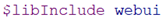

Note:
If you run a model with --gmswebui=3 all required R packages will be loaded. If you use the WebUI for the first time, the (automatically started) installation of these packages may take a while.
To generate a GAMS WebUI from your GAMS model the following steps are necessary: To be able to use the WebUI, a current GAMS version (25.1.2 or later) is required. You can download it from https://www.gams.com/download/.
Some of the applications included in the GAMS WebUI demo installation require additional Python packages. If you want to use the following demos, you must install these packages:| Demo Application | Python packages |
|---|---|
| Pickstock_live | pandas, pandas_datareader |
| Trnsport_live | geocoder |
To install the GAMS WebUI and its components, run the GAMS WebUI setup. Since a current R installation is required, the installer checks for an existing R version (3.5.1 or later) and installs it, if necessary.
To get a feeling for the use of the WebUI, it is recommended to have a look at the demo applications first. After a correct installation, these demo applications are located in C:/Users/<User_Name>/Documents/GMSWebUI_Examples/. To start a demo application, you need to run the corresponding GAMS model (e.g. GMSWebUI_Examples/trnsport/trnsport.gms) with the compile-time parameter --gmswebui=3. This can be done from within the new GAMS Studio, the GAMSIDE or using the command prompt (Note: To use the command prompt, GAMS must be in the PATH of the operating system):
cd path/to/gms_file && gams trnsport.gms --gmswebui=3
If you run a model with --gmswebui=3 all required R packages will be loaded. If you use the WebUI for the first time, the (automatically started) installation of these packages may take a while.

The screen is essentially divided in two:
In the main window the data visualization takes place like the display of the uploaded data, its manipulation and graphical representation.


 button in the upper right corner you can switch between tabular and graphical data visualization. All scalar results are summarized in the tab "Scalars".
The button enables the user to download the model input and output data.
button in the upper right corner you can switch between tabular and graphical data visualization. All scalar results are summarized in the tab "Scalars".
The button enables the user to download the model input and output data.

After testing the demo applications, it's time to get started yourself. For a better understanding it is recommended to have a look at the GAMS code of the sample applications for the next steps.
A GAMS model still can be used in the normal way (via GAMS Studio, GAMSIDE or the console) after the following adjustments
To be able to use a GAMS model in the WebUI, a few steps in the model file are necessary. First, mark those symbols that you want to be visible in the interface. This is done by framing the corresponding symbols with the tags  /
/  for input data and
for input data and  /
/  for output data. These tags can be used multiple times within a model. Alternatively one can write UIInput: or UIOutput: at the beginning of the explanatory text of a GAMS symbol to include this symbol in the WebUI. Symbols which are not tagged with one of these markers won’t be visible in the Web Interface, but they are used within the model run in the background.
for output data. These tags can be used multiple times within a model. Alternatively one can write UIInput: or UIOutput: at the beginning of the explanatory text of a GAMS symbol to include this symbol in the WebUI. Symbols which are not tagged with one of these markers won’t be visible in the Web Interface, but they are used within the model run in the background.
Note: Those Symbols which shall be displayed in the Web Interface, must also get an explanatory text in GAMS.
In the default visualization configuration of a GAMS Parameter, each Index of a Parameter is shown in a separate column. The last column contains the parameter values. With this configuration, each set element of an index will be visible in a separate row. In the example below the Parameter price has two indices date and symbol. Each index is shown in an own column named after the explanatory text of the corresponding set.

Sometimes it can be useful to show each set element of a parameters index in a separate column of the table. For the Parameter of the example above this would mean to have a column not for the set symbol itself but for all its elements AAPL, AXP, BA, etc. instead. To achieve this, a minor change in the declaration of the corresponding set has to be done.
One can either:

Note that a table width in this way quickly increases when the number of set elements of the last index gets higher. A number of for example 30 Stocks to be represented in a table would lead to 30 stock columns. In this case the default configuration for a table as shown first might be better.
If a Parameters with multiple value columns has to be displayed within the WebUI, a manual definition of the header is required. In the picture below this is done for the Parameter PData. By defining the Index phdr, the set elements Demand and Production Time are shown as value columns in the WebUI table.
Scalars and Singleton Sets are collected in a separate "Scalars" table in the interface in the basic configuration.
If all input and output symbols for the WebUI have been flagged, in a last step a file webui.gms has to be included by a  at the very end of the GAMS model. With the help of this file all model specific configuration files are created automatically later.

In the next step the model-specific configuration files for the Web Interface are created.
If you use a GAMS $call inside a model, the corresponding files have to be called using an absolute path. This is due to the different underlying working directories, which differ depending on whether a GAMS model is started from the WebUI or not.The GAMS WebUI is providing you the path to your model .gms file via idir2. This means, in order to e.g. import an Excel file called test.xlsx, GDXXRW needs to be called like this: $call gdxxrw i=%gams.idir2%test.xlsx.
In case you don't find an Excel file with the data, please make sure the xlsxwriter Python module was successfully installed (c.f. here).
If required, the web interface of the GAMS model can now be further configured. The use of the pre-implemented visualization options (at the moment these are pie charts, bar charts, line charts, scatter plots, histograms) of the GAMS WebUI is done in the directory <modeldirectory>/conf. For this a file config.json must be created, in which the desired configuration is written in JSON syntax. All available options can be taken from the different JSON schemata config_schema.json / GMSIO_config_schema.json in <GAMSroot>/GMSWebUI/conf/.
You can generate this JSON file using our Configuration Generator
If there is a desire for a visualization which is not yet pre-implemented, there is the possibility to implement it oneself. However, this requires a bit of programming effort. Custom developed graphics must be stored in the directory: <modeldirecory>/customRenderer/ in form of R code to be included as a WebUI module. Moreover, the custom graphic incl. the required R packages and supporting data has to be specified in the conf/config.json file. Below you see an example of how such a configuration should look like.

The Web Interface can be connected to a database. With the help of this data or scenarios can be loaded, changed, stored and compared. This feature is not part of the local version of this installation. If you have any questions, please contact support@gams.com.
For the use of the WebUI on a server the operating system Linux is supported. With this, you can profit by e.g. user authentication, app management and load balancing based on Docker technology. For more information on this, please contact us

To learn more about the GAMS WebUI, you have several options. This list will grow over time as the software evolves.